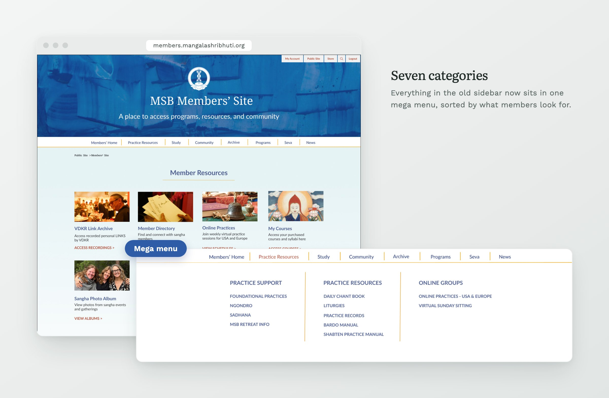
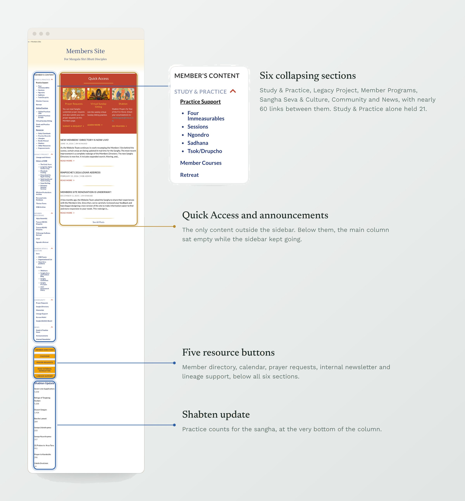
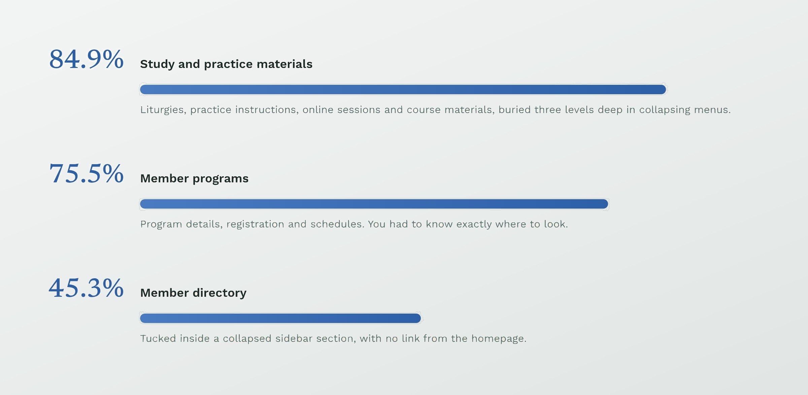
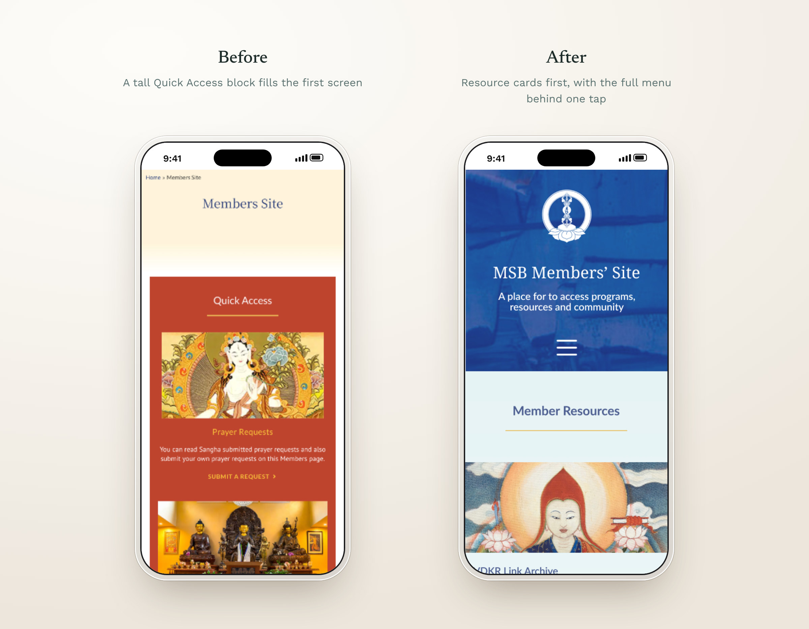
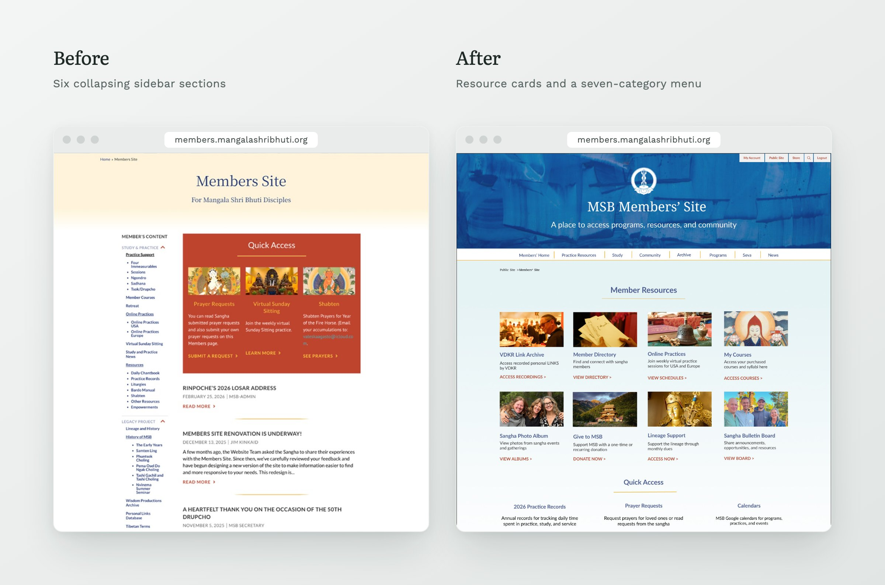
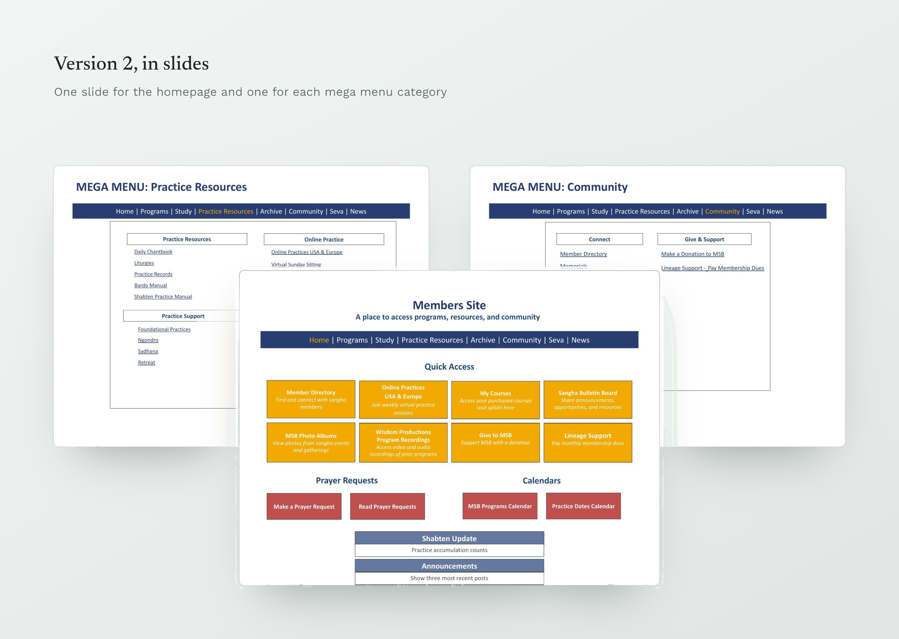
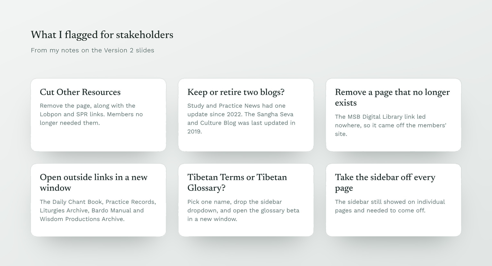
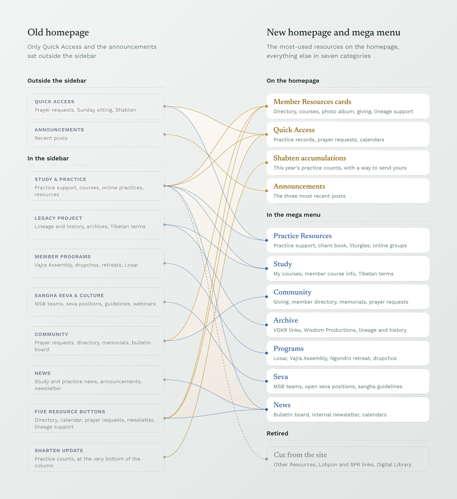
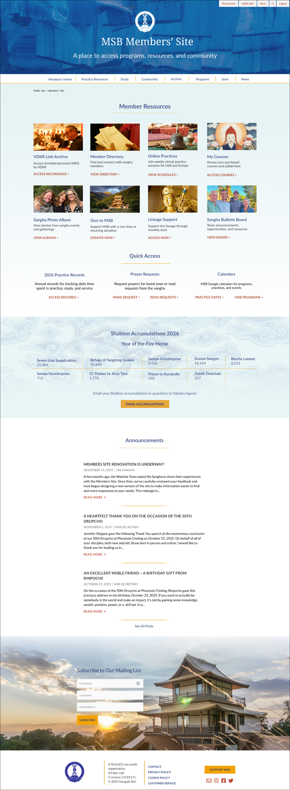

Members' portal: homepage and navigation redesign
Everyone at Mangala Shri Bhuti knew the members' portal was hard to navigate, so I took on the redesign in March 2026. I started with a member survey. Based on what 53 people told me, I reorganized 35 pages of content into a seven-category mega menu and rebuilt the homepage around the resources members use most. As lead designer, I worked with MSB's president, the head of web design, and the area directors who each oversee a part of the community, like Study, Archive and Programs.

Fig 01. The new members' portal homepage, with the Practice Resources mega menu open
The old portal ran on a collapsible sidebar with six sections and nearly 60 links. Members visited often, mostly for study and practice materials, but course materials sat several levels deep and the search function often came up empty. Apart from Quick Access and the announcements, everything on the homepage lived in that sidebar, including the five resource buttons and the Shabten practice counts.

Fig 02. The original homepage at full length. Apart from Quick Access and the announcements, everything sat in the sidebar.
I sent a survey to 522 members and 53 responded, about 10%. Only 21% said finding information on the site was easy, and most of the frustrations people listed came back to navigation and search. When I asked what would help, members kept suggesting better navigation or a table of contents.
Ease of Finding Information
Fig 03. How members rated their ability to find information on the site
Top Frustrations by Members
Fig 04. Primary frustrations reported in the member survey
Members could pick more than one reason for visiting. The top three were all hard to reach from the old sidebar.

Fig 05. Top reasons members visited the portal. Members could pick more than one.
Members already liked the content. They needed a shorter path to it, so I focused on two pieces: a homepage that puts the most-used resources up front, and a mega menu that organizes everything else the way members look for it.
AI-Assisted Research Synthesis
I used Claude to synthesize the open-ended survey responses and had a summary to the team within a day. That summary set the direction before I started wireframes.
Constraint
The WordPress theme was staying, so I kept the redesign to the information architecture, the homepage, and the visual direction. That's where members were running into trouble anyway.
Homepage
A resources section near the top links straight to My Courses, Online Practices, the Member Directory, and monthly dues. Stakeholders also asked for cards for Giving, the community Photo Album, and Wisdom Productions, which hosts livestreams and recorded teachings. Finding a course or paying dues now takes one click from the homepage.
Mega Menu
I sorted 35 pages into seven categories based on how members look for things: Practice Resources, Study, Community, Archive, Programs, Seva, and News. Practice and study material comes first, since that's what most members are there for.
Visual Design
The old site worked but felt cold. I added photos of sangha members and Buddhist imagery throughout, so members see their own community when they log in.

Fig 06. Mobile homepage before and after

Fig 07. Homepage before and after: the sidebar replaced with resource cards and a mega menu
I worked out the structure in Figma wireframes first, then moved into high-fidelity mockups and went through each mega menu section in detail. Button labels got their own pass: VIEW for browsing, ACCESS for member-only content, and DONATE for giving. With consistent labels, members can tell what a button does before they click it.
Version 1
The first version put all study and practice content in one mega menu column. Stakeholders flagged it as too crowded, and they were right. It had no clear hierarchy.
Revision
I split that column in two. Study holds structured learning, and Practice Resources holds the daily and ritual materials, like liturgies and practice instructions.
Most of the stakeholders aren't web designers, so instead of showing them plain Figma wireframes, I put Version 2 into simple slides, one for the homepage and one for each mega menu category. That made the review easy for them to follow, and it's where we sharpened the information architecture.
Everyone had already agreed the sidebar should go. The harder part was deciding what replaced it, with 35 pages of content and members coming for very different reasons. I ended up giving members two ways in. The homepage cards cover the handful of things people use most, and the mega menu holds everything else.

Fig 08. Three of the Version 2 slides I presented to stakeholders: the homepage, Practice Resources and Community

Fig 09. Content fixes and open questions I raised with stakeholders during the Version 2 review

Fig 10. Where everything on the old homepage went. The most-used resources moved up to the homepage, the rest went into the mega menu, and a few pages were cut.

Fig 11. MSB members' portal homepage, final design. Scroll to see the full page.
The survey changed how I saw the problem. Members valued the content and visited often, but they had to dig through the sidebar to get to it, so I put my time into structure and labels and left the content mostly as it was.
When stakeholders said the first mega menu was too crowded, I went back and simplified it. I think being open about that revision made the rest of the project go more smoothly.
If I did this again, I'd test the mega menu with members before finalizing it. A quick round of testing would have shown whether labels like Seva and Archive made sense to people, and I could have fixed any confusing names before launch.